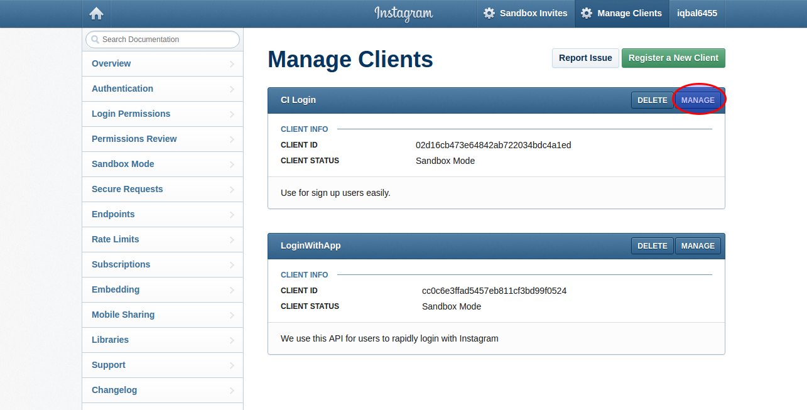
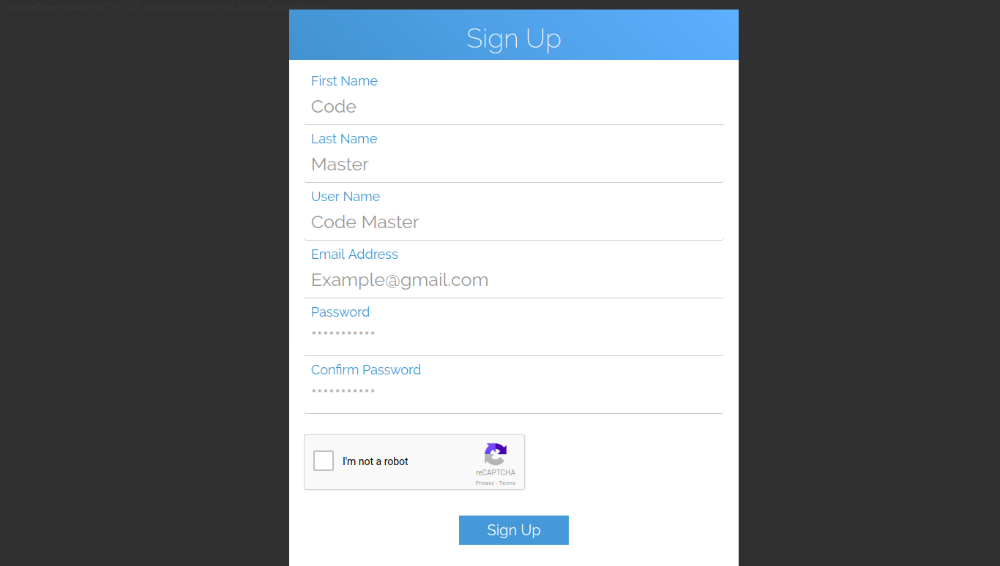
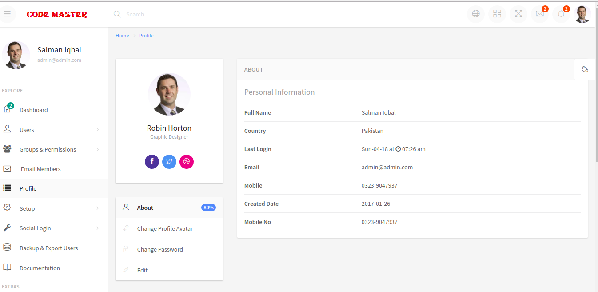

“CI Login Docs” Documentation by “Salman Iqbal” v1.7
“CI Login Docs”
Updated: 4/3/2018
By: Salman Iqbal
Email: salmaniqbal937@gmail.com
Thank you for purchasing my product. If you have any questions that are beyond the scope of this help file, please feel free to email via my user page contact form here. Thanks so much!
After all I am Human Bieng, I have tested this product 4-5 times still you people see any issue or bug in my product then please contact me highly support will be provided.
Please Don't forget review your one appreciated review can make us happy and to do work more beautifully. Thank you very much!
Table of Contents
- About
- Features
- System Requirements
- Security
- Installation
- Use of Mpdf
- Use of Dompdf
- Role-based access control (RBAC)
A) About - top
CodeIgniter Login with ion auth Library is a CodeIgniter based login and backend application to use as a starter kit for new projects. The login and registration system is completely taken care of members can get authorization rapidly with social accounts OR creating their own account.
The development is ongoing and improving. New features will continue to be added to this application.
B) Features - top
- Built with latest version of Code Igniter 3.1.7 .
- Built with latest version of CI login library ion auth 2.
- Two Factor Authentication
- Email to Members
- HMVC Ready
- Social Login (Facebook,Twitter,Google,Instagram,Linkedin).
- Role-based access control (RBAC), Roles and Permissions.
- User Profile(Edit Profile, Change Avatar, Change Password).
- User Registration Enable/Disable.
- Forgot Password Enable/Disable.
- Social Logins Enable/Disable.
- Print pages with Dompdf.
- Print pages with Mpdf.
- Ion Auth is extremely configurable.
- Multiple language ingeration in Ion Auth.
- Secure user registration and login.
- Lost Password page, to allow users to reset their password.
- Secure password algorithm using Bcrypt.
- Enable or Disable Remember Me feature on login.
- Login with email or username.
- Google reCAPTCHA on registration.
- Enable or Disable Email Activation for new user's registration.
- Create Groups / Roles.
- Assign groups to users.
- Client side and server side form validation.
- Create Users.
- Admin & other User's have their own access.
- Activate & Deactivate Users.
- Maximum Login Attempts.
- Is max login attempts exceeded.
- Increase Login Attempts.
- Account Lock Time.
- User cookies Extend on Login.
- Extend User Expiry Time.
- Track login attempts.
- Clear login attempts.
- Get login attempts num.
- Layout ( Grid System,Static Sidebar,Boxed ).
- Forms ( Form Layout, Form Components, Form Pickers, Form Wizard, Form validation, Form Masks, Dropzone Uploader, Summernote, Markdown Editor, Inline Editor, Grid Forms ).
- Button varieties.
- Email Template
- Login & SignUp Forms
- A lot of static stuff available.
C) System Requirements - top
- PHP>=5.6
- MySQL (5.1+)
D) Security - top
- XSS Filtering
- CSRF protection
- Password hashing
- Validate input data
D) Installation - top
Method One
Installation with Form Wizard (Video) : Click to View
Please follow the steps:
- Upload Zip File in your server
- Extract the Zip file that you uploaded
- Now Go to your Browser and Check http://www.yourdomain.com/install
- Give your Host Name (Ex: localhost), Database Name (Your Choice), Username and Password (That’s given by your Domain & Hosting Provider).
- Base Url will be automatic set, don't change it and click on Install button.
Method Two(Manual installation)
Manual Installation (Video) : Click to View
Please follow the steps:
- Upload and Unzip files in your web server
- Open Your Php-Myadmin and create new database with the name of yours choice
- Execute the sql file located in root dir database/login_db.sql it will create tables in the database which you have created
- open the application/config/database.php file with a text editor and set your database setting
- open the application/config/config.php file with a text editor and set your Base Url
When Installation Completed Successfully two users will be created.
1) Admin (Have full rights of system).
Email : admin@admin.com
password: password
2) Member (A genral user).
Email : codemaster@gmail.com
password: password
D) Blog - top
I have made this video because As reading, In video we can see, apply and use easily.
Click to See Videos
D) Mpdf - top
Mpdf library is already integrated.You have only add this code for basic usage.For further information visit official Mpdf site.
You can convert a view into a PDF by using the following code.
$this->load->library('pdf');
$this->pdf->load_view('welcome');
$this->pdf->Output();
You can also pass data to the function by using
$this->pdf->load_view('welcome', $data);
Note:Mpdf is used for large scale
D) Dompdf - top
Dompdf library is already integrated.You have only add this code for basic usage.For further information visit official Dompdf site.
// Load all views as normal
$this->load->view('print/print_with_Dom-pdf',$this->data);
// Get output html
$html = $this->output->get_output();
// Load library
$this->load->library('dompdf_gen');
// Convert to PDF
$this->dompdf->load_html($html);
$this->dompdf->render();
$this->dompdf->stream("welcome.pdf",array("Attachment" => false));
Note:Dompdf is used for Small scale
D) Role based access control (RBAC) - top
We have already get all privilliges Array, you have to only check in array with the below code.
if (in_array('Site Configuration',$new_arr)):
endif;
C) Twitter API - top
I have done all the setup for social login on localhost No need to more configuration.If you want to make your own API's then follow the following steps.
Note:For twitter login you must have to set Internet connection.If doing work without internet connection it will show This error on login page "Undefined index: oauth_token" and "Undefined index: oauth_token_secret".
Twitter API Configuration
click on this link and follow the following steps. Twitter Api
step 1: After click on the above link this page will open,Click on My apps.
step 2: Click on Create New App.
step 3: After click on Create New App, This Form will open fill all the required fields.In the Website Field if you have created folder for your project then write http://www.domain-name.com/folder-name and click on Create your Twitter Application button.

step 4: Click on Kyes and Access Token.
step 5: Copy the Consumer key and Consumer Secret Key Paste it in application/config/social_auth_config.php
C) Facebook API - top
Facebook API Configuration
click on this link and follow the following steps. Facebook Api
step 1: After click on the above link this page will open,Click on My apps and select Add new app.
step 2:Add app name and Click on Create New App.
step 3: When name created this page will open, Click on settings
step 4: Add App domain name in field then choose category "Apps for pages".
step 5: Then click on Add Platform and select website
step 6: And write your full website url with call back url.
step 7: In sidebar click on App Preview and click on "NO"

step 8: Copy App ID and Secret ID and paste it in config/social_auth_config.php
C) Google API - top
Google API Configuration
click on this link and follow the following steps. Google Api
step 1: After click on the above link this page will open,Click on this link where red circle is rounded.
step 2: Click on Plus button.

step 3: Write the name of your choice and click on create button
step 4: Again click on the step 1 link this pop box will open and select the project which you have created.
step 5: click on Enable API
step 6: Write down google plus in search box and select google + API
step 7: Click on "MANAGE"

step 8: After click on MANAGE API, click credentials from the sidebar this page will open click on create credentials.
step 9: Select the OAuth Client ID
step 10: This page will open and click on the configre button where red circle is rounded.
step 11: Give your choice Name for user which see users and give home page URL, click on save button.
step 12: Select Web Application
step 5: Give redirect URL.Ex: http://www.domain-name.com/login/social_login/google_login. It Must be accurate.
C) Instagram API - top
Instagram API Configuration
click on this link and follow the following steps. Instagram Api
step 1: After click the above link this page will open,click on the Manage Client Link
step 2: Click on Register New Client

step 3: This form will open fill the inputs where red circle is rounded.Please make sure the redirect url. write the captcha and click to register.
step 4: When application registered successfull then this page will open click on manage button.

step 5: Copy client ID and Secret ID and use it config file and also in login page in link.
C) LinkedIn API - top
LinkedIn API Configuration
click on this link and follow the following steps. LinkedIn Api
step 1: After click the above link this page will open click on the My apps link
step 2: Click on Register Application
step 3: This form will open fill all the input with red staric.Make a logo 80*80 it's required. Click on submit button.
step 3: After submit the form this page will open add redirect url and click on add button after added URL just click on Update button below.
C) Modular Extensions - HMVC - top
Modular Extensions - HMVC
Modular Extensions makes the CodeIgniter PHP framework modular. Modules are groups of independent components, typically model, controller and view, arranged in an application modules sub-directory that can be dropped into other CodeIgniter applications.
HMVC stands for Hierarchical Model View Controller.
Module Controllers can be used as normal Controllers or HMVC Controllers and they can be used as widgets to help you build view partials.
Features:
All controllers can contain an $autoload class variable, which holds an array of items to load prior to running the constructor. This can be used together with module/config/autoload.php, however using the $autoload variable only works for that specific controller.
class Xyz extends MX_Controller
{
$autoload = array(
'helper' => array('url', 'form'),
'libraries' => array('email'),
);
}
The Modules::$locations array may be set in the application/config.php file. ie:
$config['modules_locations'] = array( APPPATH.'modules/' => '../modules/', );
Modules::run() output is buffered, so any data returned or output directly from the controller is caught and returned to the caller. In particular, $this->load->view() can be used as you would in a normal controller, without the need for return.
Controllers can be loaded as class variables of other controllers using $this->load->module('module/controller'); or simply $this->load->module('module'); if the controller name matches the module name.
Any loaded module controller can then be used like a library, ie: $this->controller->method(), but it has access to its own models and libraries independently from the caller.
All module controllers are accessible from the URL via module/controller/method or simply module/method if the module and controller names match. If you add the _remap() method to your controllers you can prevent unwanted access to them from the URL and redirect or flag an error as you like.
Notes:
To use HMVC functionality, such as Modules::run(), controllers must extend the MX_Controller class.
To use Modular Separation only, without HMVC, controllers will extend the CodeIgniter Controller class.
You must use PHP5 style constructors in your controllers. ie:
class Xyz extends MX_Controller
{
function __construct()
{
parent::__construct();
}
}
Constructors are not required unless you need to load or process something when the controller is first created.
All MY_ extension libraries should include (require) their equivalent MX library file and extend their equivalent MX_ class
Each module may contain a config/routes.php file where routing and a default controller can be defined for that module using:
$route['module_name'] = 'controller_name';
Controllers may be loaded from application/controllers sub-directories.
Controllers may also be loaded from module/controllers sub-directories.
Resources may be cross loaded between modules. ie: $this->load->model('module/model');
Modules::run() is designed for returning view partials, and it will return buffered output (a view) from a controller. The syntax for using modules::run is a URI style segmented string and unlimited variables.
/** module and controller names are different, you must include
the method name also, including 'index' **/
modules::run('module/controller/method', $params, $...);
/** module and controller names are the same but the method is not 'index' **/
modules::run('module/method', $params, $...);
/** module and controller names are the same and the method is 'index' **/
modules::run('module', $params, $...);
/** Parameters are optional, You may pass any number of parameters. **/
To call a module controller from within a controller you can use $this->load->module() or Modules::load() and PHP5 method chaining is available for any object loaded by MX. ie: $this->load->library(‘validation’)->run().
To load languages for modules it is recommended to use the Loader method which will pass the active module name to the Lang instance; ie: $this->load->language('language_file');
The PHP5 spl_autoload feature allows you to freely extend your controllers, models and libraries from application/core or application/libraries base classes without the need to specifically include or require them.
The library loader has also been updated to accommodate some CI 1.7 features: ie Library aliases are accepted in the same fashion as model aliases, and loading config files from the module config directory as library parameters (re: form_validation.php) have beed added.
$config = $this->load->config(‘config_file’), Returns the loaded config array to your variable.
Models and libraries can also be loaded from sub-directories in their respective application directories.
When using form validation with MX you will need to extend the CI_Form_validation class as shown below,
/** application/libraries/MY_Form_validation **/
class MY_Form_validation extends CI_Form_validation
{
public $CI;
}
before assigning the current controller as the $CI variable to the form_validation library. This will allow your callback methods to function properly. (This has been discussed on the CI forums also).
class Xyz extends MX_Controller
{
function __construct()
{
parent::__construct();
$this->load->library('form_validation');
$this->form_validation->CI =& $this;
}
}
View Partials:
Using a Module as a view partial from within a view is as easy as writing:
echo Modules::run('module/controller/method', $param, $...);
Parameters are optional, You may pass any number of parameters.
Modular Extensions installation:
- Start with a clean CI install
- Set $config[‘base_url’] correctly for your installation
- Access the URL /index.php/welcome => shows Welcome to CodeIgniter
- Drop Modular Extensions third_party files into the application/third_party directory
- Drop Modular Extensions core files into application/core, the MY_Controller.php file is not required unless you wish to create your own controller extension
- Access the URL /index.php/welcome => shows Welcome to CodeIgniter
- Create module directory structure application/modules/welcome/controllers
- Move controller application/controllers/welcome.php to application/modules/welcome/controllers/welcome.php
- Access the URL /index.php/welcome => shows Welcome to CodeIgniter
- Create directory application/modules/welcome/views
- Move view application/views/welcome_message.php to application/modules/welcome/views/welcome_message.php
- Access the URL /index.php/welcome => shows Welcome to CodeIgnite
you should now have a running Modular Extensions installation.
C) Google Captcha - top
- In the label Field write your Domain name.If you are with localhost then wirte localhost or example.com.
- Choose your own type of captcha I have choosed the Invisible reCaptcha.
- Wirte your domain name if you are using localhost then wirte localhost or example.com.
- Click to checkbox and Accept the terms and conditions and click to register
- Paste this script tag at end of your HTML template with JS links:
- Paste this snippet at the end of the < /form> to create a button protected by the Invisible reCAPTCHA. You will need to create a callback function to handle the result.
C) How To Use - top
Login form
After instillation completed goto http://yourdomain.com/, you will get login up form.Admin can direct login with default email and password.
Admin Login
Email:admin@admin.com
Pass :password
Genral User Login
Email:codemaster@gmail.com
Pass :password
Two factor Authentication
Two Factor Authentication by default is Disable, If Admin Enable Two factor Authentication then the system will send Six digits code to your email just copy this code and paste here to verify yourself, After verification you can see the dashboard.
Sign Up
New user will sign up first, Below the login button, click on register button, the sign up form will open.
Forgot Password
If a user forgot password, then click on the link below login button "Lost password". Forgot password page will open, put email in the form the activation link will be send to user email.
Dashboard

Users
Admin can see here all users role/groups (user role in this system), Activate or Deactivate users, Edit the users information, Send Email to Sepcific user and delete users. An admin can also print the users list.
Activate/Deactivate User
In the users page click on the Active button the deactivate page will be open, if you are sure to deactivate a user then select yes option and click the Deactivate button.
If Re-Activate a user, then in the users page just click on Inactive button in status column.
Update User
Only admin can update the user information. Click on the edit button in the users page. Admin can also Change users group.
Send Email
If Admin want to send email to a sepcific user then search a user in search box and click on send button. this pop will be open "System Name", "System Email", "This user email" will automatically pick up you have to just write subject of email and Message, click on send button.
Add User
To Add new user click on the sidebar users->add users.
View Groups
Only admin can update and delete user groups
Create Groups
By default there are two groups admin and members, The admin have full access to create groups as much as...... There are two steps to create group in first step write down the group name and description.In the step two assign privilegs to group.
Update Group
To Upddate User group privileges click on Edit button here You can Update user group privilegs.
Create Permissions
Admin can create persmissions,update and delete.
Email to Members
There are two options to send emails. Send emails to members and send email to group
1. Send emails to user by selecting them through checkbox.
2. Send emails to group.
Admin can send emails to registered members of the system. Admin must select one user to send email other wise it will not send. Admin can send email to one or more users by select through checkbox. In the title field add your subject and message click to send button.
Profile
A user can see his profile, Update profile picture, change password, Edit Profile.
General Configuration
General Configuration Are the system configuration which are pre setup, if you want to change then you can update thorugh this form OR can change mmanually.
If you want you to change it manually then goto application/config->ion_auth.php
Login Configuration
Login Configuration are those configuration if Admin want to Enable / Disable User Registration, Social Logins, Forgot Password, Two Factor Authentication .You have to click only Enabel / Disable Option. it's AJAX base.
Social Login
A user can change App Id, App Secret, Redirect Url of Facebook,Google,Linkedin,Instagram,Twitter

Backup & Export
Admin can take backup of database and also Export user list.
Once again, thank you so much for purchasing this product. As I said at the beginning, I'd be glad to help you if you have any questions relating to this product. No guarantees, but I'll do my best to assist. If you have a more general question relating to the product on CodeCanyon, you might consider visiting the forums and asking your question in the "Item Discussion" section.
Salman Iqbal